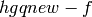
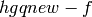
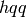
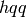

SymPy Patches Tutorial¶
Talk is cheap. Show me the code.
—Linus Torvalds [1]
For impatient¶
If you just want to create a couple of patches in 5 minutes and be done with it, follow the Quick Start in the Appendix. However, if you want to make your work more effective and also learn how we work, read this whole tutorial.
Introduction¶
In SymPy we encourage collaborative work.
Everyone is welcome to join and to implement new feature, fix some bug, give general advice, etc... Also, we try to discuss everything and to review each other’s work so that many eyes can see more thus raising the quality.
General discussion takes place on sympy@googlecode.com mailing list and in the issues, and the code is discussed in sympy-patches@googlecode.com mailing list.
As someone of you already know, software development is not just coding. A lot of non-coding tasks have to be done in order to produce good code. Just to mention a few: setting up infrastructure, designing, testing, documenting, assisting new developers (we are doing it here), and of course programming.
But even programming is not all about writing the code, it is about writing the code and preparing it so that the code can be included into the project.
Both producing the code and bringing it to the project are important parts of the game – without the code there is nothing to bring in, and having the code outside is a nowin for anyone.
As already said above, we review changes. This idea was borrowed from successful projects like Linux, Python, SAGE and a lot more. In short each change is first reviewed by other developers and only when it is approved the code is pushed in.
Like it takes effort to write good and clear code, reviewing other’s work needs effort too. There are good practices how to do things so that reviewing is fun for both the author and the reviewer. We try to follow them, and we’ll try to show you how to follow too.
This tutorial will guide you how to do SymPy development with Mercurial and patches.
By the way
when reviewing other’s patches you learn a lot, so why not to join as a reviewer too?
Workflow¶
Here we’ll describe the workflow using real world example where we fix some bug.
Hacking¶
Suppose I want to fix issue

I go there

Look at the problem description

...

Aah, it looks like printing code in  tries to treat
tries to treat
 as an instance of a new-style class. I think I know how to fix this!
as an instance of a new-style class. I think I know how to fix this!

Ok, going to dive into the problem.
First of all there exist two approaches to work:
- doing all the work in one repository, and
- creating new repository for each task
In practice both of them have pros and cons, but we’ll consider the second one as it does the job and is simpler.
So, let’s clone main repo, and go hacking
By the way
if you haven’t already done so, do
$ hg clone http://hg.sympy.org/sympy
$ hg clone sympy sympy-fix755 updating working directory 386 files updated, 0 files merged, 0 files removed, 0 files unresolved $ cd sympy-fix755
Note
This is a real-life example. If you want to repeat the exact steps, update your working directory to 4962f6641827 revision now:
$ hg up 4962f6641827
Note
We now recommend to use git. This tutorial was written when we still used mercurial. See our Quick Start for an introduction to git and use our Git hg rosetta stone wiki page to learn how to translate commands between mercurial and git. The ideas in this tutorial stay correct, the exact commands can be a little different with git though.
I use vim editor, and usually it is very handy to navigate by tags, so I build tags database first, then invoke my editor [2]
$ ctags -R $ vim
It was in  function, so I locate it using tags
function, so I locate it using tags

here it is

and here is the failing code

Aah, it seems old classes do not have the attribute
. Let’s see if this is the gist of the problem.$ ./bin/isympy In [1]: class C: pass ...: In [2]: C ————————————————————————— exceptions.AttributeError Traceback (most recent call last) ... AttributeError: class C has no attribute ‘__class__’
Yes, it is. So I change it to what would always work. Then I invoke  [3]
to see what I’ve changed:
[3]
to see what I’ve changed:
$ hq

and its time to see whether this fixes the problem
In [1]: import sympy In [2]: sympy.__dict__
oops, another bug seems to be sitting there:

after some examination it turned out to be a problem related to pretty-printing of sequences with even height
In [3] {x**2: 1}
—————————————————————————
exceptions.ValueError Traceback (most recent call last)
...
ValueError: xobj: expect length = 2*k+1
I decided to add another row for this case
$ hqq # full diff at this stage

since after all it looks good:
In [1]: [x**2]
Out[1]:
⎡ 2⎤
⎣x ⎦
In [2]: (x**2,)
Out[2]:
⎛ 2⎞
⎝x ⎠
In [3]: {x**2: 1}
Out[3]:
⎧ 2 ⎫
⎨x : 1⎬
⎩ ⎭
so why not?
Now let’s verify that printing tests pass
$ py.test sympy/printing/ ============================= test process starts ============================== executable: /usr/bin/python2.5 (2.5.0-final-0) using py lib: /home/kirr/src/tools/py/py-0.9.0/py <rev unknown> sympy/printing/tests/test_gtk.py[1] f sympy/printing/tests/test_latex.py[8] .......f sympy/printing/tests/test_mathml.py[6] .....f sympy/printing/tests/test_pretty.py[10] .........f sympy/printing/tests/test_pretty_unicode.py[10] .......... sympy/printing/tests/test_python.py[6] ...... ============== tests finished: 37 passed, 4 xfail in 0.30 seconds =============
Everything seems to be ok with pprinting evenly heighted sequences. Let’s get back to original problem:
In [1]: class C: pass ...: In [2]: C Out[2]: __main__.C In [3]: import sympy In [4]: sympy.__dict__ (a lot is printed)
ok, it works.
Let’s write tests (this is important)
$ hqq # 2.patch

Also, when looking at function again, I’ve noticed there are typos in
 so I’ve spellchecked the whole file
so I’ve spellchecked the whole file
$ hqq # 3.patch

It seems we have done the job now.
To ensure everything stays in shape, let’s see if all tests pass
$ ./setup.py test running test ============================= test process starts ============================== executable: /usr/bin/python2.5 (2.5.0-final-0) using py lib: /home/kirr/src/tools/py/py-0.9.0/py <rev unknown> sympy/concrete/tests/test_gosper.py[2] .. sympy/concrete/tests/test_products.py[3] ... sympy/concrete/tests/test_sums_products.py[9] ......fff sympy/core/tests/test_arit.py[35] .................................ff sympy/core/tests/test_assumptions.py[18] ................ff sympy/core/tests/test_basic.py[24] ........................ sympy/core/tests/test_complex.py[10] .......... sympy/core/tests/test_count_ops.py[1] . sympy/core/tests/test_diff.py[3] ... sympy/core/tests/test_equal.py[4] .... sympy/core/tests/test_eval.py[8] .......f sympy/core/tests/test_eval_power.py[6] ...... sympy/core/tests/test_functions.py[20] ................fff. sympy/core/tests/test_match.py[24] .......................f sympy/core/tests/test_numbers.py[20] .................... sympy/core/tests/test_relational.py[2] .. sympy/core/tests/test_str.py[8] ........ sympy/core/tests/test_subs.py[13] ............. ... == tests finished: 712 passed, 1 xpass, 60 xfail, 4 skipped in 125.20 seconds == Testing docstrings.
Good.
Back to version control¶
We’ve finished hacking, and it’s time to remember about version control. The goal is to prepare our work for inclusion into the project.
First, there are three semantically independent changes made:
- dispatcher was fixed to handle old-style classes correctly
- we fixed pretty-printing to handle vertical objects of even height
- typos in were fixed
It is good to structure changes, and as said in the Introduction we try to make the whole process fun for all, so let’s prepare three separate patches for each change. This way it would be easier to review them.
For this we are going to use Mercurial Queues and Record extensions.
By the way
if you haven’t already done so, include the following lines into your  :
:
[extensions]
hgext.mq =
hgext.record =
I’m going to record fix for
firstNote
The command  below was introduced in Mercurial 1.0. If you have an
older version of Mercurial, consider upgrading it. If that is not possible,
you can use  and
below was introduced in Mercurial 1.0. If you have an
older version of Mercurial, consider upgrading it. If that is not possible,
you can use  and  commands – they’ll do the job,
although they are not-so-convenient when you work on several things
at once (that’s why was invented).
commands – they’ll do the job,
although they are not-so-convenient when you work on several things
at once (that’s why was invented).
$ hg qrecord –edit pprint-fix-old-classes.patch
diff –git a/sympy/printing/pretty/pretty_symbology.py b/sympy/printing/pretty/pretty_symbology.py
1 hunks, 5 lines changed
examine changes to ‘sympy/printing/pretty/pretty_symbology.py’? [Ynsfdaq?] n
diff –git a/sympy/printing/printer.py b/sympy/printing/printer.py
3 hunks, 6 lines changed
examine changes to ‘sympy/printing/printer.py’? [Ynsfdaq?] y
@@ -22,7 +22,7 @@
Also, if BAR is a subclass of FOO, _print_FOO(bar) will be called for
instance of BAR, if no _print_BAR is provided. Thus, usually, we don’t
- need to provide prining routines for every class we want to support –
+ need to provide printing routines for every class we want to support –
only generic routine has to be provided for a set of classes.
A good example for this are functions - for example PrettyPrinter only
record this change to ‘sympy/printing/printer.py’? [Ynsfdaq?] n
@@ -52,7 +52,7 @@
It’s job is to loop through expr classes (class + it’s bases), and
try to dispatch the work to _print_<EXPR_CLASS>
- e.g., suppose we have the following class hierarcy::
+ e.g., suppose we have the following class hierarchy::
Basic
|
record this change to ‘sympy/printing/printer.py’? [Ynsfdaq?] n
@@ -90,7 +90,7 @@
# See if the class of expr is known, or if one of its super
# classes is known, and use that print function
res = None
- for cls in expr.__class__.__mro__:
+ for cls in type(expr).__mro__:
if hasattr(self, ‘_print_’+cls.__name__):
res = getattr(self, ‘_print_’+cls.__name__)(expr, *args)
break
record this change to ‘sympy/printing/printer.py’? [Ynsfdaq?] y
diff –git a/sympy/printing/tests/test_pretty.py b/sympy/printing/tests/test_pretty.py
1 hunks, 9 lines changed
examine changes to ‘sympy/printing/tests/test_pretty.py’? [Ynsfdaq?] y
@@ -215,3 +215,12 @@
def test_pretty_limits():
assert pretty( limit(x, x, oo, evaluate=False) ) == ‘ lim x\nx->oo ‘
assert pretty( limit(x**2, x, 0, evaluate=False) ) == ‘ 2\nlim x \nx->0 ‘
+
+def test_pretty_class():
+ “”“test that printer dispatcher correctly handles classes”“”
+ class C: pass # C has no .__class__ and this was causing problems
+ class D(object): pass
+
+ assert pretty( C ) == “test_pretty.C”
+ assert pretty( D ) == “<class ‘test_pretty.D’>”
+
record this change to ‘sympy/printing/tests/test_pretty.py’? [Ynsfdaq?] y
diff –git a/sympy/printing/tests/test_pretty_unicode.py b/sympy/printing/tests/test_pretty_unicode.py
1 hunks, 27 lines changed
examine changes to ‘sympy/printing/tests/test_pretty_unicode.py’? [Ynsfdaq?] n
Pay attention to how I carefully choose which hunks go into this patch and
which do not. Especially note how some changes made to were
recorded and other changes (spelling fixes) were left intact in the work dir.
Then an editor is popped up and asks about commit message:
pprint: fix handling of old-style classes (#755) We used to dispatch based on expr.__class__.__mro__, but when expr is an old-style class we failed, because old-style classes do not have __class__ attribute. Let’s just use type(expr).__mro__ which works in all cases. HG: Enter commit message. Lines beginning with ‘HG:’ are removed. HG: – HG: user: Kirill Smelkov <kirr@landau.phys.spbu.ru> HG: branch ‘default’ HG: changed sympy/printing/printer.py HG: changed sympy/printing/tests/test_pretty.py
Now you have one patch applied
$ hg qapplied pprint-fix-old-classes.patch
and work-dir changes shrinked somewhat
$ hqq # 4.patch

note, how there is no more
-> change in  output.
change in  output.
Congratulations, you’ve recorded your first patch!
Let’s proceed with pprint
$ hg qrecord -e xobj-fix-even-height.patch
diff –git a/sympy/printing/pretty/pretty_symbology.py b/sympy/printing/pretty/pretty_symbology.py
1 hunks, 5 lines changed
examine changes to ‘sympy/printing/pretty/pretty_symbology.py’? [Ynsfdaq?] y
@@ -311,7 +311,10 @@
if bot is None: bot = ext
if mid is not None:
if (length % 2) == 0:
- raise ValueError(‘xobj: expect length = 2*k+1’)
+ # even height, but we have to print it somehow anyway...
+ # XXX is it ok?
+ length += 1
+
else:
mid = ext
record this change to ‘sympy/printing/pretty/pretty_symbology.py’? [Ynsfdaq?] y
diff –git a/sympy/printing/printer.py b/sympy/printing/printer.py
2 hunks, 4 lines changed
examine changes to ‘sympy/printing/printer.py’? [Ynsfdaq?] n
diff –git a/sympy/printing/tests/test_pretty_unicode.py b/sympy/printing/tests/test_pretty_unicode.py
1 hunks, 27 lines changed
examine changes to ‘sympy/printing/tests/test_pretty_unicode.py’? [Ynsfdaq?] y
@@ -198,3 +198,30 @@
assert u == s
+def test_upretty_seq_even():
+ “”“there used to be a bug when pprinting sequences with even height”“”
+ u = upretty([x**2])
+ s = \
+u”“”\
+⎡ 2⎤
+⎣x ⎦\
+”“”
+ assert u == s
+
+ u = upretty((x**2,))
+ s = \
+u”“”\
+⎛ 2⎞
+⎝x ⎠\
+”“”
+ assert u == s
+
+ u = upretty({x**2: 1})
+ s = \
+u”“”\
+⎧ 2 ⎫
+⎨x : 1⎬
+⎩ ⎭\
+”“”
+ assert u == s
+
record this change to ‘sympy/printing/tests/test_pretty_unicode.py’? [Ynsfdaq?] y
entering patch description...
pretty: fix xobj for even height
Previously pprint({x**2: 1}) was failing with cryptic exception
ValueError: xobj: expect length = 2*k+1
And this is a wrong approach.
Things need to just work, so I’ve modified xobj to tweak evenly heighted
objects somewhat. After all it looks good, so why not?
In [1]: [x**2]
Out[1]:
⎡ 2⎤
⎣x ⎦
In [2]: (x**2,)
Out[2]:
⎛ 2⎞
⎝x ⎠
In [3]: {x**2: 1}
Out[3]:
⎧ 2 ⎫
⎨x : 1⎬
⎩ ⎭
HG: Enter commit message. Lines beginning with ‘HG:’ are removed.
HG: –
HG: user: Kirill Smelkov <kirr@landau.phys.spbu.ru>
HG: branch ‘default’
HG: changed sympy/printing/pretty/pretty_symbology.py
HG: changed sympy/printing/tests/test_pretty_unicode.py
Congrats, now we have two patches recorded:
$ hg qapplied pprint-fix-old-classes.patch xobj-fix-even-height.patch
and workdir is left with only spelling fixes:
$ hqq # 5.patch

Let’s finish it
$ hg qrecord -e printer-fix-typos.patch
diff –git a/sympy/printing/printer.py b/sympy/printing/printer.py
2 hunks, 4 lines changed
examine changes to ‘sympy/printing/printer.py’? [Ynsfdaq?] y
@@ -22,7 +22,7 @@
Also, if BAR is a subclass of FOO, _print_FOO(bar) will be called for
instance of BAR, if no _print_BAR is provided. Thus, usually, we don’t
- need to provide prining routines for every class we want to support –
+ need to provide printing routines for every class we want to support –
only generic routine has to be provided for a set of classes.
A good example for this are functions - for example PrettyPrinter only
record this change to ‘sympy/printing/printer.py’? [Ynsfdaq?] y
@@ -52,7 +52,7 @@
It’s job is to loop through expr classes (class + it’s bases), and
try to dispatch the work to _print_<EXPR_CLASS>
- e.g., suppose we have the following class hierarcy::
+ e.g., suppose we have the following class hierarchy::
Basic
|
record this change to ‘sympy/printing/printer.py’? [Ynsfdaq?] y
printer.py: fix typos HG: Enter commit message. Lines beginning with ‘HG:’ are removed. HG: – HG: user: Kirill Smelkov <kirr@landau.phys.spbu.ru> HG: branch ‘default’ HG: changed sympy/printing/printer.py
Now we have three patches applied
$ hg qapplied pprint-fix-old-classes.patch xobj-fix-even-height.patch printer-fix-typos.patch
and clean workdir
$ hg st $ hg diff $
Here is a bit of history:
$ hg glog -l4 @ changeset: 1902:dff9895d1d23 | tag: qtip | tag: printer-fix-typos.patch | tag: tip | user: Kirill Smelkov <kirr@landau.phys.spbu.ru> | date: Mon Mar 24 22:44:05 2008 +0300 | summary: printer.py: fix typos | o changeset: 1901:787707e1a28c | tag: xobj-fix-even-height.patch | user: Kirill Smelkov <kirr@landau.phys.spbu.ru> | date: Mon Mar 24 22:44:04 2008 +0300 | summary: pretty: fix xobj for even height | o changeset: 1900:b2321483936b | tag: pprint-fix-old-classes.patch | tag: qbase | user: Kirill Smelkov <kirr@landau.phys.spbu.ru> | date: Mon Mar 24 22:44:04 2008 +0300 | summary: pprint: fix handling of old-style classes (#755) | o changeset: 1899:4962f6641827 | tag: qparent | user: Ondrej Certik <ondrej@certik.cz> | date: Sat Mar 22 13:35:55 2008 +0100 | summary: Failing doctests were fixed. This was triggered by a different ordering. |
and a nice graphical history browser is handy
$ hg view

Yep!
Patches are ready, lets send them for review¶
At this stage we are done with preparing our patches, and it is time to send them for review.
First, let’s rebase them to the latest tip.
For this we go to  mirroring repository, see whats new, and pull updates:
mirroring repository, see whats new, and pull updates:
$ cd ../sympy/ $ hg in comparing with http://hg.sympy.org/sympy searching for changes changeset: 1900:0bc73e367102 user: Ondrej Certik <ondrej@certik.cz> date: Sat Mar 22 16:06:47 2008 +0100 summary: The print ordering of Add has been improved. changeset: 1901:7cd8948a664a user: Kirill Smelkov <kirr@landau.phys.spbu.ru> date: Mon Mar 24 00:17:12 2008 +0300 summary: [1/2] let’s use __slots__ changeset: 1902:529ba5e4a7c6 user: Kirill Smelkov <kirr@landau.phys.spbu.ru> date: Mon Mar 24 00:17:13 2008 +0300 summary: [2/2] let’s use __slots__ changeset: 1903:115df7b1ee75 user: Kirill Smelkov <kirr@landau.phys.spbu.ru> date: Mon Mar 24 00:17:14 2008 +0300 summary: add comments to Mul.flatten changeset: 1904:75544c92be1d tag: tip user: Kirill Smelkov <kirr@landau.phys.spbu.ru> date: Mon Mar 24 01:19:27 2008 +0300 summary: slightly speedup Basic.__getattr__ $ hg pull –update pulling from http://hg.sympy.org/sympy searching for changes adding changesets adding manifests adding file changes added 5 changesets with 26 changes to 21 files 21 files updated, 0 files merged, 0 files removed, 0 files unresolved
Now let’s get back to
$ cd ../sympy-fix755/
We have three patches applied
$ hg qapplied pprint-fix-old-classes.patch xobj-fix-even-height.patch printer-fix-typos.patch
Let’s rebase them.
First we unapply all patches
$ hg qpop -a Patch queue now empty
Then pull recent changes in from our mirror repo
$ hg pull -u pulling from /home/kirr/src/sympy/spt-work/sympy searching for changes adding changesets adding manifests adding file changes added 5 changesets with 26 changes to 21 files 21 files updated, 0 files merged, 0 files removed, 0 files unresolved
Then apply patches back
$ hg qpush –all applying pprint-fix-old-classes.patch applying xobj-fix-even-height.patch applying printer-fix-typos.patch Now at: printer-fix-typos.patch
Now we have our patches applied on top of the latest tip.
Note
We were lucky.
Sometimes changes we’ve made overlap with the changes made by other developers. This situation is called conflict and has to be resolved using automated merge programs or by hands.
This topic is out of scope of this tutorial, but an interested reader is encouraged to read chapter 3 in hgbook and TutorialConflict HG wiki page.
Ok, it time to send patches for review!
Ensure last time on outgoing changes
$ hg out comparing with /home/kirr/src/sympy/spt-work/sympy searching for changes changeset: 1905:95b5af645143 tag: pprint-fix-old-classes.patch tag: qbase user: Kirill Smelkov <kirr@landau.phys.spbu.ru> date: Wed Mar 26 15:18:09 2008 +0300 summary: pprint: fix handling of old-style classes (#755) changeset: 1906:316070047993 tag: xobj-fix-even-height.patch user: Kirill Smelkov <kirr@landau.phys.spbu.ru> date: Wed Mar 26 15:18:09 2008 +0300 summary: pretty: fix xobj for even height changeset: 1907:63eb63c9f098 tag: qtip tag: printer-fix-typos.patch tag: tip user: Kirill Smelkov <kirr@landau.phys.spbu.ru> date: Wed Mar 26 15:18:09 2008 +0300 summary: printer.py: fix typos
And let’s finally send them:
$ hg email –outgoing comparing with /home/kirr/src/sympy/spt-work/sympy searching for changes This patch series consists of 3 patches. Subject: [PATCH 0 of 3] Fix for #755 + two more Write the introductory message for the patch series. While working on #755 (pprint fails on old style classes) I’ve spot a couple of other inconveniences. Please review. To: sympy-patches@googlegroups.com TODO put this into .hgrc Cc: Sending [PATCH 0 of 3] Fix for #755 + two more ... Sending [PATCH 1 of 3] pprint: fix handling of old-style classes (#755) ... Sending [PATCH 2 of 3] pretty: fix xobj for even height ... Sending [PATCH 3 of 3] printer.py: fix typos ...
Ok, patches sent.
Usually I use Mutt, but I’m having temporary problems with mail delivery today, so this is sympy-patches as viewed from Google web interface:

Ondrej already reviewed them, and all patches were approved. Good.
Two possibilities exist here:
- patches may be applied by reviewer, and
- patches may be pushed in by the author
Generally when you just begin contributing to SymPy, your patches will be applied by someone else, but as your experience matures, you’ll be granted priviledges to push in yourself.
Anyway, let’s see how pushing is done:
Let’s first push to local mirror
$ hg push –force pushing to /home/kirr/src/sympy/spt-work/sympy searching for changes adding changesets adding manifests adding file changes added 3 changesets with 5 changes to 4 files
Note
--force is used here because otherwise hg push complains that source has mq patches applied. As we still push to local repository we know what we do.
Note
If you want to convert MQ patches to regular commits in the same repository, use “hg qdelete -r qbase:qtip” (the patches need to be applied).
Now let’s go to mirror and push into main repo!
$ cd ../sympy $ hg push ssh://hg@hg.sympy.org/sympy pushing to ssh://hg@hg.sympy.org/sympy searching for changes remote: adding changesets remote: adding manifests remote: adding file changes remote: added 3 changesets with 5 changes to 4 files remote: notify: sending 1 subscribers 1 changes remote: notify: sending 1 subscribers 1 changes remote: notify: sending 1 subscribers 1 changes
Ok, patches are pushed. Here is what  says:
says:

Now, let’s close

And we are done!
Epilogue¶
Let’s summarize the approach:
- First relax, and hack on the problem as you see fit
- When you think you’ve reached the point when something is done, start recording patches
- After your patches are prepared, send them for review
- If everything is ok, patches go to the main repository.
Interested readers are suggested to read additional literature:
- Mercurial Book, and
- its chapters about mercurial queues: (I, II)
- Mercurial wiki pages: Tutorial, Mq Tutorial, Mercurial Queues,
And of course
Patches Welcome!
We’ve reached the end of this tutorial, now it’s time to practice on the SymPy project: http://www.sympy.org/
We encourage you to join us. Feel free to improve SymPy and this tutorial as well.
Have Fun!
How to Write Docstrings¶
Execute the code that you want to add into the docstrings by:
$ bin/isympy -c python -p no
[...]
Documentation can be found at http://sympy.org/
>>> x = Symbol("x", positive=True) # doctest: +SKIP
>>> x.assumptions0 # doctest: +SKIP
{'commutative': True, 'complex': True, 'imaginary': False, 'negative':
False, 'nonnegative': True, 'nonpositive': False, 'nonzero': True,
'positive': True, 'real': True, 'zero': False}
>>>
This is important, because doctests use sstrrepr printer, which orders dictionaries in a hash independent way, and so does bin/isympy -c python -p no, so you can just copy & paste the output from there into the docstring. Then check the docstring with (assuming you changed basic.py):
$ bin/doctest sympy/core/basic.py
============================= test process starts ==============================
executable: /usr/bin/python (2.6.2-final-0)
sympy/core/basic.py[30] .............................. [OK]
================== tests finished: 30 passed in 0.14 seconds ===================
and that’s it.
Appendix¶
Quick Start¶
This section explains how to get you up and running in 5 minutes. However we recommend that you read the full tutorial above, at least the introduction and then go briefly through the rest.
You can use both git and mercurial with SymPy. Originally we only used mercurial, but later several core developers switched to git. Use what you prefer, but git is recommended.
Quick Start with Git
Edit your ~/.gitconfig (tell git your name and setup colors and some handy shortcuts):
[user]
name = Ondrej Certik
email = ondrej@certik.cz
[color]
diff = auto
status= auto
branch= auto
interactive = true
[alias]
ci = commit
di = diff --color-words
st = status
co = checkout
[sendemail]
to = sympy-patches@googlegroups.com
Download the latest SymPy git and fix something:
$ git clone git://git.sympy.org/sympy.git Initialized empty Git repository in /tmp/abb/sympy/.git/ remote: Counting objects: 15421, done. remote: Compressing objects: 100% (4171/4171), done. remote: Total 15421 (delta 11260), reused 15301 (delta 11140) Receiving objects: 100% (15421/15421), 17.02 MiB | 2019 KiB/s, done. Resolving deltas: 100% (11260/11260), done. $ cd sympy $ vim sympy/matrices/matrices.py
Check your changes:
$ git di
diff –git a/sympy/matrices/matrices.py b/sympy/matrices/matrices.py
index 02b01cc..ae36b31 100644
— a/sympy/matrices/matrices.py
+++ b/sympy/matrices/matrices.py
@@ -183,7 +183,7 @@ class Matrix(object):
lambda i,j: self[i,j].conjugate())
return out
- C = property(conjugate,None,None,”By-element conjugation.”)
+ C = property(conjugate, None, None, “By-element conjugation.”)
@property
def H(self):
Commit them:
$ git ci -a -m “Matrices: white space corrected” Created commit 5b6bf9c: Matrices: white space corrected 1 files changed, 1 insertions(+), 1 deletions(-)
Do more changes, commit, etc.:
$ vim sympy/matrices/matrices.py $ git ci -a -m “Matrices: more white space corrected” Created commit 1b8615d: Matrices: more white space corrected 1 files changed, 1 insertions(+), 1 deletions(-)
Generate the final patches:
$ git format-patch -n -2 0001-Matrices-white-space-corrected.patch 0002-Matrices-more-white-space-corrected.patch
The “-n” means to create a patch series with subjects like [1/2], [2/2] and “-2” tells git to generate patches from the latest two commits. Check the generated files that all is ok and then either attach them to our issues, or send it to our list, preferably to the sympy-patches@googlecode.com list.
Tip: to send the patch to the sympy-patches list conveniently from the command line, do:
$ git send-email 000* 0001-Matrices-white-space-corrected.patch 0002-Matrices-more-white-space-corrected.patch Who should the emails appear to be from? [Ondrej Certik <ondrej@certik.cz>] Emails will be sent from: Ondrej Certik <ondrej@certik.cz> Message-ID to be used as In-Reply-To for the first email? (mbox) Adding cc: Ondrej Certik <ondrej@certik.cz> from line ‘From: Ondrej Certik <ondrej@certik.cz>’ OK. Log says: Sendmail: /usr/sbin/sendmail -i sympy-patches@googlegroups.com ondrej@certik.cz From: Ondrej Certik <ondrej@certik.cz> To: sympy-patches@googlegroups.com Subject: [PATCH 1/2] Matrices: white space corrected Date: Mon, 10 Nov 2008 16:30:35 +0100 Message-Id: <1226331036-9550-1-git-send-email-ondrej@certik.cz> X-Mailer: git-send-email 1.5.6.5 Result: OK (mbox) Adding cc: Ondrej Certik <ondrej@certik.cz> from line ‘From: Ondrej Certik <ondrej@certik.cz>’ OK. Log says: Sendmail: /usr/sbin/sendmail -i sympy-patches@googlegroups.com ondrej@certik.cz From: Ondrej Certik <ondrej@certik.cz> To: sympy-patches@googlegroups.com Subject: [PATCH 2/2] Matrices: more white space corrected Date: Mon, 10 Nov 2008 16:30:36 +0100 Message-Id: <1226331036-9550-2-git-send-email-ondrej@certik.cz> X-Mailer: git-send-email 1.5.6.5 In-Reply-To: <1226331036-9550-1-git-send-email-ondrej@certik.cz> References: <1226331036-9550-1-git-send-email-ondrej@certik.cz> Result: OK
That’s it – to learn more about git, read our Git hg rosetta stone wiki page and follow links from there.
Quick Start with Mercurial
Edit your ~/.hgrc (tell Mercurial your name and use git style diffs):
[ui]
username = Ondrej Certik <ondrej@certik.cz>
[diff]
git = true
showfunc = 1
Download the latest SymPy hg and fix something:
$ hg clone http://hg.sympy.org/sympy destination directory: sympy requesting all changes adding changesets adding manifests adding file changes added 2141 changesets with 7123 changes to 1065 files (+1 heads) updating working directory 416 files updated, 0 files merged, 0 files removed, 0 files unresolved $ cd sympy $ vim sympy/matrices/matrices.py
Check your changes:
$ hg di
diff –git a/sympy/matrices/matrices.py b/sympy/matrices/matrices.py
— a/sympy/matrices/matrices.py
+++ b/sympy/matrices/matrices.py
@@ -23,7 +23,7 @@ class _MatrixAsBasic(Basic):
So for common functionality implemented in Basic, we have to provide this
proxy.
- see #420
+ see the issue #420
“””
def __init__(self, m):
self.m = m
Commit them:
$ hg ci -m “Matrix._MatrixAsBasic() docstring improved”
Check the final patch and save it to a file:
$ hg export tip # HG changeset patch # User Ondrej Certik <ondrej@certik.cz> # Date 1213706432 -7200 # Node ID 9ad7000c53b914a4a196de87b67e0cd57a60a528 # Parent 2c92cefdd78ea34f070c97063802c92ef97fd4d8 Matrix._MatrixAsBasic() docstring improved diff –git a/sympy/matrices/matrices.py b/sympy/matrices/matrices.py — a/sympy/matrices/matrices.py +++ b/sympy/matrices/matrices.py @@ -23,7 +23,7 @@ class _MatrixAsBasic(Basic): So for common functionality implemented in Basic, we have to provide this proxy. - see #420 + see the issue #420 “”” def __init__(self, m): self.m = m $ hg export tip > matrix.patch
and attach the file matrix.patch to our issues, or send it to our list, preferably to the sympy-patches@googlecode.com list.
Tip: to send the patch to the sympy-patches list conveniently from the command line, join the sympy-patches list with some email address and put this email address together with these lines into your ~/.hgrc:
[email]
to = sympy-patches@googlegroups.com
from = Ondrej Certik <ondrej@certik.cz>
method = /usr/sbin/sendmail
and then:
$ hg email tip This patch series consists of 1 patches. Cc: Sending [PATCH] Matrix._MatrixAsBasic() docstring improved ...
The patch will then be reviewed. What if you have to improve the patch as the result of the review? Import it to MQ:
$ hg qimport -r tip
Change some files:
$ vim sympy/matrices/matrices.py
Check your improvements:
$ hg di
diff –git a/sympy/matrices/matrices.py b/sympy/matrices/matrices.py
— a/sympy/matrices/matrices.py
+++ b/sympy/matrices/matrices.py
@@ -23,7 +23,7 @@ class _MatrixAsBasic(Basic):
So for common functionality implemented in Basic, we have to provide this
proxy.
- see the issue #420
+ See the issue #420.
“””
def __init__(self, m):
self.m = m
Refresh the patch:
$ hg qrefresh
Optionally convert it back to a regular commit:
$ hg qdelete -r tip
And send it for a review again.
| [1] | http://lkml.org/lkml/2000/8/25/132 |
| [2] | If you use some other editor, just figure out how to make your life as easy as I did for vim (hint Emacs has this for sure too) |
| [3] | I have these aliases in my alias hq='hg diff . | vim -R -'
alias hqq='hg diff . | gvim -geometry 80x40+600+0 -R "+set nowrap" -'
|